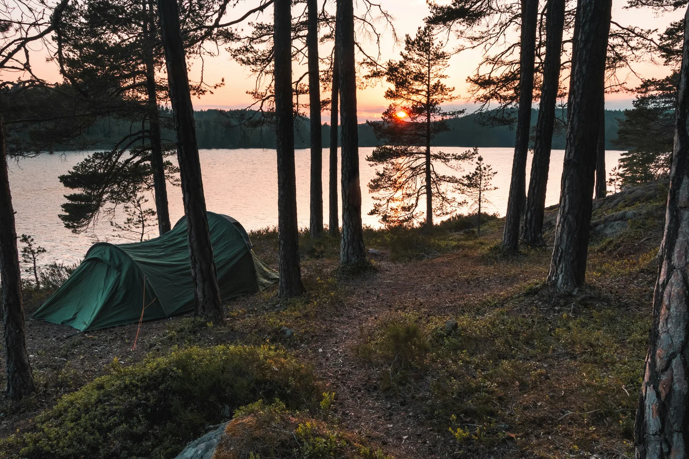
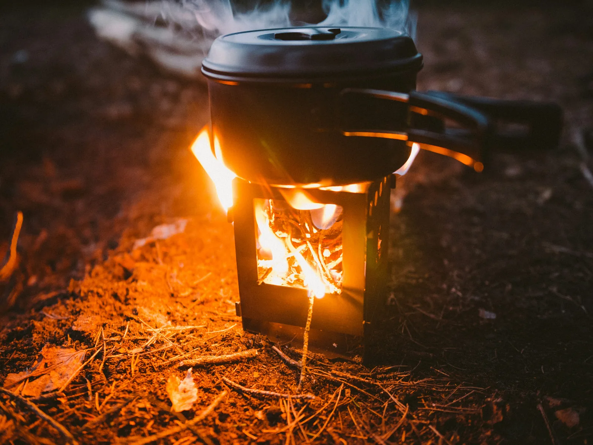

A week of bikepacking from Oslo, by train, gravel and fjord
The best long bikepacking trip you can do from Oslo does not start with a car. It starts on a train platform at Oslo Central Station. Three and a bit hours later you are in the mountains, and a week after that you roll down to a fjord and take the train home. In between is 383 km of gravel across the roof of southern Norway. If the Nordmarka overnighter is the taster, this is the whole meal.
We did not create this route, and we want to be clear about that. It links two long-established Norwegian cycle roads, the Mjølkevegen and the Rallarvegen, and the version that joins them end to end was mapped and documented by Matt Bark as Of Milk and Navvies on bikepacking.com. Go there for the GPX, the elevation profile and the full route notes. What we can add is the local half of the picture: how to run it out of Oslo on a rented bike, and what riders who have actually done it wish they had known.
Most big bikepacking routes involve a logistical headache at each end. This one has a train station at both. You catch the Trondheim line north to Vinstra to start, and you come home from the far end on the Bergen line, one of the great railway journeys anywhere. Point to point, no loop back to a parked car, no shuttle.
That also settles the bike question. Flying a bike into Oslo means boxes, reassembly, and finding a box again for the trip home, and riders report that last part being genuinely hard to sort in the city. Rent here instead and the problem evaporates: you collect a gravel bike at Oslo Central Station, a few minutes from the Vinstra platform, ride the route, and hand it back when you are done. No box, no build, no airline drama.
It suits our rates, too. There is no maximum rental length, and a rental over four days takes 20 percent off the standard Gravel bike, so a week on the road is about as cost-effective as our rental gets. Add a seatpost bag, frame bag and bar bag for luggage, pick your pedals, and longer rentals come with a spare tube, tool kit and bottle. A helmet is included with every bike.
The route splits into two halves with very different characters. The Mjølkevegen, the "milk road" named for the dairy once carried down from the high summer farms, runs across open mountain pastures where cattle and sheep still graze, dropping into a green valley and climbing out again between each plateau. It is the pastoral half: long views, working farms, gravel toll roads.
The Rallarvegen, the "navvies' road," is the second half and a complete change of scene. It is the old service track built alongside the Bergen railway, and it climbs steadily to Finse at 1,322 m, the highest station on the network, before the long descent through the Flåm valley to the fjord. This is the dramatic half: bare high country, snow lingering into July, and a final drop past waterfalls to sea level.
Neither half is technical. Around 71 percent of the route is unpaved, almost all of it on solid gravel road, and the difficulty is entirely in the climbing, over 7,000 m of it across the week. If you can ride 50 to 70 km on gravel day after day, you can ride this. Most people take five to seven days; plan for six if you can, because the early days carry more climb than the numbers suggest and rushing them wastes the best camping.
One local habit worth adopting: eat and warm up often. You can find a waffle and a coffee every 15 km or so, and on a wet day that is not indulgence, it is strategy. Learn the word koselig before you go, and when the rain sets in, look on the map for a fjellstue, a mountain lodge with a fireplace and couches where drying out is basically the point.
This is high country, and it ignores the calendar. Riders in the same late-July week have measured 30 degrees down in the valleys and 5 degrees on the Rallarvegen plateau, with near-freezing forecasts one week and sunshine the next, and at least a passing shower most days. Bring real layers, pack overshoes, keep the rain shell reachable, and let the forecast decide which days you make long ones.

The right to roam applies in full out here, so you can camp on uncultivated land at least 150 m from buildings for up to two nights in a spot. Two things riders learn the hard way: the high ground stays wet and boggy for weeks after snowmelt, and the open plateaus are rocky, treeless and windy, so aim your evenings at sheltered ground. Save one night for the Rallarvegen, where big boulders make natural windbreaks and there are camp spots beside waterfalls and swimmable lakes within a couple of hours of Haugastøl.
If you would rather not carry a tent every night, campsites with simple cabins, mountain lodges and valley hotels are spaced along the way. Resupply is easy, with supermarkets every 30 to 55 km through the middle and longer gaps at each end, and even the small shops tend to stock freeze-dried meals, so carry snacks and a light reserve rather than days of food. Skip the water filter too; taps to top up bottles are plentiful.
Three things reward planning, and punish leaving to chance:
Two notes on the finish. Flåm is a cruise port, and when a ship is in it fills with several thousand passengers, so some riders prefer to spend the last night up at Myrdal or Vatnahalsen where the quiet holds and the trains still stop. And if you take the ferry, your bike rides exposed to salt spray, so rinse it at the first chance, or dodge the issue entirely by taking the train and handing a rented bike straight back to us.
A gravel bike with 35 mm or wider tyres is the right tool, and one route detail is worth knowing before you commit: near Geilo the route is forced onto about 22 km of the fast Rv7. If that does not appeal, a local train covers the same gap, booked ahead like everything else.
Multi-day gravel bike rental from Oslo with luggage bags, your choice of pedals, and 20 percent off the Gravel bike on rentals over 4 days.
Bike rental in OsloLinked together they run about 383 km from Vinstra to Flåm, and most riders take 5 to 7 days, with six a comfortable sweet spot. The first days carry serious climbing, so four-day plans tend to stretch to five. The riding is on good gravel roads and is technically easy, but there is over 7,000 m of climbing in total, so the days are honest.
Take the train from Oslo to Vinstra on the Trondheim line, about 3 hours 20 minutes, with several services a day. Bike spaces are limited and must be booked in advance through entur.no. At the far end, Flåm and Myrdal connect back to Oslo via the Bergen line.
This is a summer route. The Mjølkevegen's mountain roads officially open in late June and the Rallarvegen in July, once the snow has been cleared, and the season runs until September or October. Snowdrifts can persist at the highest points even into late July.
Technically easy, physically demanding. Around 71 percent of the route is unpaved, almost all of it on wide gravel roads, with no difficult riding. The work is in the climbing: some ramps hold over 8 percent for several kilometres, and the high point is 1,322 m at Finse. If you can ride 50 to 70 km a day with luggage, the route is within reach.
Yes. We rent gravel bikes by the day with no maximum length, and a rental of more than 4 days gets 20 percent off the standard Gravel bike. Seatpost, frame and bar bags can be added, longer rentals include a spare tube and tool kit, and pickup at Oslo Central Station puts you next to the train to Vinstra.
Yes. Norway's right to roam allows camping on uncultivated land at least 150 m from buildings, for up to two nights in one spot. Higher ground can stay wet and boggy after snowmelt, so many riders mix wild camping with the campsites and mountain lodges spaced along the route.
Mostly, with caveats. The route's creator reckons a trailer works for the majority of the ride, with a few warnings: the steep final descent into Flåm would be lively with a trailer on, the short singletrack sections favour a single-wheel design, and the busy Rv7 stretch near Geilo is best avoided entirely with a child trailer, using the train gap instead. Plan the train and ferry legs carefully too, as bike-plus-trailer space is not a given.